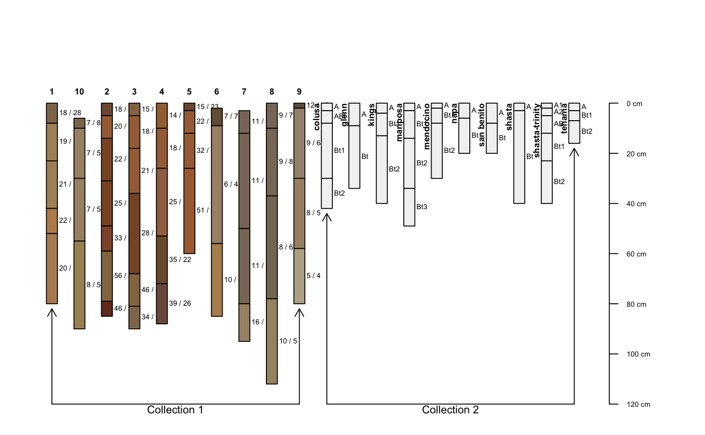

plotMultipleSPC.RdCombine multiple SoilProfilecollection objects into a single profile sketch, with annotated groups.
plotMultipleSPC(spc.list, group.labels, args = rep(list(NA), times=length(spc.list)), arrow.offset = 2, bracket.base.depth = 95, ...)
| spc.list | a list of |
|---|---|
| group.labels | a vector of group labels, one for each |
| args | a list of arguments passed to |
| arrow.offset | vertical offset in depth from base of start / end profiles and group bracket arrows |
| bracket.base.depth | baseline depth used for group brackets |
| ... | additional arguments to the first call to |
See examples below for usage.
Multiple color legends for thematic profile sketches are not currently supported, use with caution.
# load sample data data(sp3) data(sp4) # convert soil colors sp3$h <- NA ; sp3$s <- NA ; sp3$v <- NA sp3.rgb <- with(sp3, munsell2rgb(hue, value, chroma, return_triplets=TRUE)) sp3[, c('h','s','v')] <- t(with(sp3.rgb, rgb2hsv(r, g, b, maxColorValue=1))) # promote to SoilProfileCollection depths(sp3) <- id ~ top + bottom depths(sp4) <- id ~ top + bottom # combine into a list spc.list <- list(sp3, sp4) # plot multiple SPC objects, with list of named arguments for each call to plotSPC par(mar=c(1,1,3,3)) plotMultipleSPC(spc.list, group.labels=c('Collection 1', 'Collection 2'), args=list(list(name='name', id.style='top'), list(name='name', id.style='side')), bracket.base.depth=120)